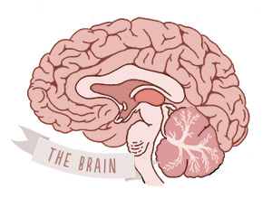
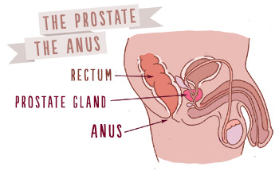
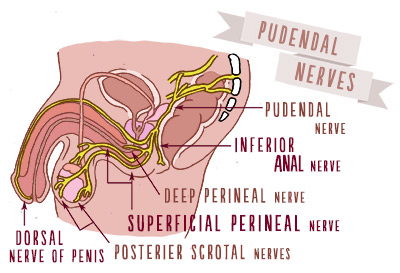
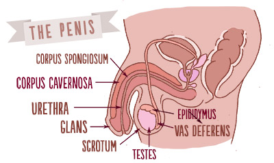
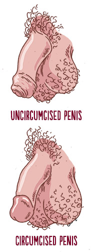
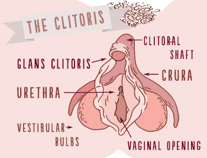
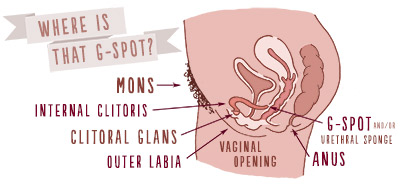

With Pleasure: A View of Whole Sexual Anatomy for Every Body
by

Usually, when we’re looking at a layout of sexual anatomy it's through the lens of reproduction, so it’s all about penises and vaginas, testes and uterus. But from a standpoint of pleasure and sexual response, sexual anatomy is about far more than genitals and is far less about reproductive organs. Ultimately, all the parts and systems of the body are potential sexual organs in the context of pleasure.
Our most important sexual organs when it comes to pleasure are not only usually different than we think, but operate far less independently than we assume or have been told.
We're not saying the genitals aren't important or a big deal with sexual pleasure and experience: for most people, most of the time, they are. That's hardly surprising. There are a lot of densely packed nerve endings in our genitals, and if and when we stimulate them ourselves, wantedly have them stimulated by others, or rub two sets together, it does tend to often result in a sexual kapowie. But the kapowie experience is a lot more complicated than the stimulating of the genitals part.
Sexual anatomy is also often presented as only about genitals because sexual anatomy presentations tend to privilege reproduction above pleasure and cultural thinking about sexuality often isn’t very holistic or sophisticated. Let’s face it: we also live in a world where it’s considered a lot more socially acceptable to frame sexual anatomy as reproductive than as the parts that can bring us sexual pleasure. We can talk about cute babies-to-be at the dinner table with Grandma: we can rarely say the same about knee-knocking orgasms or dizzy arousal.
Reproductive function tells us little about pleasure. Seeing our sexual anatomy through the lens of pleasure can dismantle myths about sexual response, gender or sex binaries or sexual orientation stereotypes; can let us discover parts of our bodies or ways they functioned we didn’t even know we could cultivate a tangible awareness of. It can tell the truth that for most people, most of the time, the pursuit of solo or partnered sex is often about the pursuit of emotional and physical pleasure, not about a desire to breed, and that the form of that pursuit is as diverse as we are. Pleasure is a big and vital part of most of our lives, including sexual pleasure, and the anatomical basics of sexual pleasure need be no more a mystery than where babies come from. (Of course, not everyone wants to or can have babies by using their genitals to do it, so the focus on reproduction leaves a lot of us out of the pleasure part, even when we don’t need to be left out.)
You might be used to sexual anatomy being framed as male or female, but as we usually don't, we're not going to do it that way this time, either. We don't need to, we'd rather not, and in the context of pleasure, it makes much more sense not to go that route. This shouldn't be a big deal. After all, you know if what you’ve got is a penis or most like a penis; if you’ve got a vulva or what is most like a vulva. They look different enough most of the time: you don’t need us to assign sex or gender to know that stuff.
We’re going to start not just with the parts every one of us has, but also with the part of everyone’s body that influences sexuality the most.

Sex is Mostly Between Your Ears, Not Your Legs
The largest, most important and most active sexual organ of the body isn’t a penis or vagina. It’s the brain and its structures.
The brain is responsible for our emotions, our perceptions (including of pain and of pleasure), our memories; for regulating and controlling our central nervous system, our cardiovascular system, our endocrine system and our senses. The hypothalamus of the brain is responsible for the secretion of hormones that influence sexual feelings and response, like oxytocin, vasopressin, serotonin and dopamine. The brain receives and processes messages from your sensory organs, giving you and other parts of your body information about how something (or someone, including yourself) looks, sounds, tastes, smells and feels to you. It's also the brain that sends and receives signals regarding blood pressure, heart rate, body temperature and how we breathe: all huge parts of sexual function, experience and response.
Not everyone’s brain works the same way -- not by a serious long shot -- and sometimes wires can get crossed. Also, if you have any kind of paralysis the signals from parts of your body to your brain may not move as fast as someone else’s or they may be silent altogether. This doesn’t mean you can’t feel things, mind: even with paralysis there are few absolutes. You may have been told one thing by a doctor, but we think the best way to find out what’s possible is to explore on your own.
It’s the pleasure center of your brain that sends signals back to you that what's happening feels good (or doesn’t), and it's your brain and nervous system that transmits the feelings and sensations we have with orgasm. Not only is sex about communication between people, it's about the systems of your brain and the rest of your body communicating, too. The beauty of bodies and brains is that they don’t all communicate the same way. It may take time to figure out how your personal communication works, but it’s definitely worth the effort.
Without your brain, you wouldn’t feel pain or pleasure, even if you were touched in a way or in a place which many people find pleasurable. The brain is primarily responsible for orgasm: during sexual pleasure, all the nerve endings of your body (including your genitals, all linked to your nervous system) are in concert and communication with your brain, and vice-versa. Without everything going on in our brains, we wouldn’t have any interest in sex at all, nor find sex anything of interest.
This -- and the fact that orgasm is more about the brain and nervous system than body parts where physical stimulation that might be part of why we have an orgasm occurs -- is one reason why classifying orgasms like "vaginal orgasm" or "clitoral orgasm" is problematic. Ultimately, when it comes to orgasm (as well as most of sexual pleasure), if we want to attach it to one body part, the only correct term would be "brain orgasm," since that’s where orgasm, like so much of sexuality, happens most.
Sexuality is physical and sensory, but also chemical, emotional (yes, even for anyone who says sex isn’t at all emotional for them), psychological, intellectual, social, cultural and multi-sensory. That's all brain stuff. It’s not just what we feel if we touch ourselves or someone else touches us a certain way and how the brain influences those sensations, but all we think and feel about it, including messages others have given us, all our previous sexual experiences and experiences which may have influenced our sexuality, our hopes and fears, our sexual fantasies or expectations, how we feel about who we’re with if and when we have sexual partners, how we feel about our sexual selves as a whole and everything going on with us hormonally and physically when we are sexually stimulated – whether we’re aroused without any kind of touch, or if touch is also involved -- in any way. No matter what other parts of our bodies are part of what’s going on with us sexually our brain is our biggest, most important and most active sexual organ.
Once you understand how the brain – what it is, what it does, all the systems it controls and responds to – is our largest and most important sexual organ, it's a lot easier to see why we, as a people, can be so sexually diverse and experience any kind of sex so differently. After all, if sex was only or mostly about our genitals, even with genital diversity, it would be sound to expect that those of us with the same basic parts would have the same experiences with a given kind of touch. But we don’t, not by a serious long shot, and that's primarily because of our brains. Once you understand how the brain is our largest and most important sex organ you can also begin to see how thinking differently isn’t necessarily a negative when it comes to sexual pleasure.
Tingly Bits
You might have heard someone use the term “erogenous zones” at some point. That’s a term popularized in sexology in the 60's and 70's to describe areas of the body of high sensitivity which people often (but not always) find particularly sexually stimulating.
When we say high sensitivity, we mean that some areas of the body have more sensory nerve receptors (a nerve that passes impulses from receptors to the central nervous system: that engages more of a hey-how's-it-going-good-how-about-you running conversation between those parts of your body and your brain) than other areas. They're places where we’re generally more sensitive to both pain and pleasure. When it comes to sensory nerves, not all parts of the body are created equal. That's why, for instance, we can find a lot of people who feel highly stimulated by someone rubbing their nipples, and fewer people who feel highly stimulated by someone rubbing their elbows.
Lists of erogenous zones can sometimes be arbitrary – when someone lists them, sometimes they're just making a list of what they personally like best -- but for many people, typical erogenous zones include the lips, tongue, palms and fingers, the soles of the feet, the inner thighs, nipples, neck, ears, armpits and the genitals. Our skin, as a whole, is really an erogenous zone. Mucocutaneous regions of the body (made of both mucosa and cutaneous skin) are also often particularly sensitive: parts like the foreskin, penis, the external clitoris, the inner labia, the perineum, mouth or nipples. Just so it’s clear, there is no absolute relationship between gender and where on your body you feel sexually sensitive: people who are or who identify as men can and do enjoy nipple stimulation, while some people who are women do not, for instance.
Bear in mind, not only is individual sensitivity different – what feels great for one person may feel ticklish or like too much to someone else – but what we carry in our brains about a given part of our body and what's happening there influences our sexual response with those parts.
If we had violent or negative experiences or ideas about a given part, even if it’s packed densely with sensory nerve receptors, it can feel unpleasant instead of pleasant. If someone we aren't into touches one of those areas unwantedly, it tends to feel a lot different than when they’re touched by someone who we very much want to have touching us. When a relationship is really great, a partner touching us in this place, in this way, might have felt amazing. But that same person touching us in the same place in the exact same way can feel lousy or even like nothing at all if that relationship has later gone straight to hell. One day, a given kind of stimulation might result in orgasm, while the very next day, it won't.
There goes the brain at work, yet again, showing us how we can't segregate physical sensations from it and how what's going on with us up between our ears has a whole lot to do with what goes on between our legs.
Where are your tingly bits? Most of us can find out about where your erogenous zones are with your own two hands: masturbation doesn't have to just be about genitals, after all. If touching yourself with your hands doesn’t work, you might be able to use other body parts, or even notice how parts of your body feel when sheets, clothing, the rain, or the wind touch it. With partners, take the time to find out about areas on both of your bodies you each tend to find sensitive and sexually arousing, really focusing on exploring ALL of your body, and communicating to each other where those sensitive areas are. This is one reason it makes a lot of sense not to rush into genital sex: you can miss finding out about all the parts of each other's bodies which are sexually responsive and which can be exciting either all by themselves, or can add pleasure to genital sex. Genital sex doesn’t work for all of us, and for most people sex that's only genital tends to get old really fast.
In the Deep South
Before we go there, know that just like with all the parts of our bodies, genital variation is diverse and genitals are not always as dimorphic (looking only one of two ways) as they are presented or as we may assume them to be, especially when we’re young or haven’t had an earnestly wide diversity of sexual partners, as many people won’t in their lives.
We don’t say that noses only come in this shape or that one, or that faces only look this way or that: it’s no more accurate to say that genitals only look one of two ways. The genitals of some people -- like some intersex people, people who have had sexual reassignment or other genital surgery, people who have had genital injuries, mutilations or who just had major variances at birth -- may not match ideas of what genitals "should" look like or fit any one diagram or description well. Some people who identify as men or male have a vagina; some people who identify as women or female have a penis. As well, some people who have a penis may call it a vagina or something else: we don't all use the same language for our body parts, and some people are comfortable with terms for their genitals that others are not.
Genital variation is also important to keep in mind when anyone talks about "normal" sexual function or an experience of sexuality/anatomy which we gender and/or attribute as normal for a given sex or gender. For instance, when we talk about penises, we can’t say that only a penis with a foreskin or one without one is normal since both types exist and many men have one or the other. A vulva of someone with a large clitoral hood and small labia can look massively different from the vulva of someone with larger labia and a smaller hood. Color differences between different people can also be substantial: while some genitals are peach or pink, others are dark brown or purple. And what feels really great to one person genitally may feel either really uncomfortable or completely boring to someone else.
Let’s start with something that not only can everyone have, but that everyone can also be.
The anus, rectum and perianal region
Everyone has an asshole (and everyone can also be an asshole). The nerves and muscles within and around the perianal area play a part in the genital sensations of sex even if no one is engaging in any kind of anal or perianal sexual stimulation or sex whatsoever.
The anus -- the external opening to the rectum, visible between your butt cheeks -- is surrounded by two concentric rings of muscle: the internal and external sphincter. The external can be voluntarily controlled (in other words, you can think about squeezing it open or closed and make that happen); the internal can’t. The anus is rich with sensory nerve endings: it has half the nerve endings in the whole pelvic region and those are interconnected with other pelvic muscles. Like the vagina, most of those nerve endings are concentrated around the opening and just inside the rectum. The anus is unlike the vagina in that it does not self-lubricate.
The anus and its surrounding areas can be a site of sexual pleasure for any gender or sexual orientation: notions that only gay men can or do enjoy anal stimulation, for instance, are false and based in homophobia, even though plenty of gay men do enjoy anal stimulation (so do plenty of bi or straight men). Ideas that the only reason women would engage in any kind of anal sex would be to please male partners are false, even if that’s why some women do. Sexual anal stimulation may be more stimulating for people who have a prostate gland than for those who are don't. The prostate gland can only be directly accessed via the rectum and is only present in people who also have a penis (though the Skene's glands discussed below are homologous to the prostate gland we're talking about here). For those who do have a penis, a lower portion of it is inside the body and stimulus to that person's rectum or perineum can stimulate that area.
The pudendal nerve – something else we all have -- is located in the perianal region at the bottom of the spinal cord, and for folks whose nerve pathways aren’t being disrupted in some way, it’s quite the powerhouse. It supplies nerves to the bladder, anus, perineum, penis, areas around the scrotum and the clitoris. It divides into two terminal branches: the perineal nerve, and the dorsal nerve of the penis or the dorsal nerve of the clitoris. A lot of the feelings people have in their genitals and pelvis during orgasm – including the spasms people can feel with orgasm or ejaculations -- are because of the pudendal nerve as well as the pelvic nerve.
If you want to see the differences up close between the pudendal, other nerves, muscles and other aspects of the internal anatomy in a vulva and a penis (and other surrounding parts of those genital systems), you can click here to see the vulva or here to see how it works from a back view of the penis and anus. Looking at both is also a pretty cool way to see some interesting similarities between them and to consider all of the muscles involved and surrounding any set of genitals: how our muscles react and what having those muscles engaged feels like are yet another component of sexual pleasure.
The pubococcygeus muscle (PC) muscle (which some people call Kegel muscles) is also in the perianal region. It stretches from the pubic bone to the tail bone, and forms the floor of the pelvic cavity and supports the pelvic organs. If you’ve ever squeezed out the last drops of urine when you urinated, you did that by squeezing that muscle. The PC muscle also usually contracts during orgasm.
The perineal sponge is also in this region in people born with a vulva. Internal to the body, it's between the bottom of the vaginal opening and the rectum, and is part of the clitoral system, and is made of nerve endings, erectile tissue and blood vessels. A person may feel sensations of this sponge from stimulation to the vagina, clitoris or anus or the areas around them. During sexual arousal, it becomes swollen with blood and compresses the outer third of the vagina along with the vestibular bulbs (which house the Bartholin's glands) and urethral sponge. (Levine S. et al. "Handbook of Clinical Sexuality", page 180 Brunner-Routledge 2003) While sometimes, a vagina may feel “tight” because of nervousness, fear or lack of arousal, this is a reason people feel or experience a vaginal “tightness” because of arousal.
Try it for yourself: You can squeeze and flare those sphincter and PC muscles just like you do when squeezing out a drop of urine or pushing out a bowel movement. If you do, you'll notice that you feel sensations from those muscles and all the nerves there in other areas, like in your clitoris or penis, in your lower back or your abdominals: you may even be able to feel sensations from just moving things a little in that area as far away as in your neck.
The Prostate Gland
We weren’t kidding when we said there was a whole lot going on in the perianal region: the prostate gland is there, too. The prostate is a sensory, walnut-sized gland in the body. It's below the bladder between the rectum and urethra at the base of the penis: if you were born with a penis, you were born with a prostate.
The prostate is highly sensitive to pressure and touch, and can be most acutely felt during receptive anal sex (in other words, when something is in the person’s anus who’s got the prostate) or massage to the perineum. Some people can reach orgasm with prostate stimulation all by itself. Others need other additional stimulation – like to the penis -- and find that prostate stimulus enhances sensations with other areas or enhances orgasm: in other words, makes orgasm feel more intense. Sometimes people call the prostate the P-spot.
Unpack your baggage: Anyone should only ever engage in the sexual activities they and their partners want to, and any kind of receptive anal sex is always just one option of many. Whether you ever want to explore that or not, if you're holding unto homophobic or body-hating baggage about your bottom, let it go. The prostate gland and other parts of the perianal region ARE part of everyone's sexual body. When any of us have ideas that a given part of our body is icky or shameful, it tends to have a negative influence on our sex lives and our sexualities, and can also impact how partners feel about their bodies. Nothing on the body is gross or unacceptable, and no part of the body or anything you do with it says anything at all about your sexual orientation. Sexual orientation is between our ears, not in our bottoms or between our legs.
The Penis
The penis is primarily composed of three columns of tissue: two corpora cavernosa that lie next to each other on the dorsal (top) side and one corpus spongiosum between them. Sexual sensation of the penis is primarily fueled by the dorsal nerves and the pudendal nerve.
Any and all portions of the penis may be enjoyable – or not! -- when sexually stimulated. Like anything else, all people are a little different, and just because one person likes it a lot when one part of their penis is touched or touched a certain way doesn’t mean someone else will like those same things. The most highly sensitive areas of the penis are usually the glans, the coronal ridge, the frenulum, the raphe, the shaft, and for uncircumcised men, the foreskin and ridged band. The glans has a higher number of sensory nerves than the shaft of the penis. The whole of the penis (not accounting for the foreskin when it’s present) is usually estimated to have around 4,000 sensory nerve endings.
- If you don’t know what we’re talking about with those parts, or want some other diagrams, you can have a look at our larger piece on the penis here.
As we mentioned earlier, the base of the penis is inside the body, but can still play a part in pleasure especially with perineal massage or receptive (as in, inside that person’s bottom, not putting the penis in someone else’s) anal sex.
Psssst: If you're a person with a penis who is all hung up (as it were) on how long your penis is, by the time you get to the end of this piece I'm hoping you'll see why that's silly. In case you need it made more clear: the opening, or front, of the anus and rectum is what is most sensitive: the back isn't. The opening, or front, of the vagina is what's most sensitive: the back isn't. The sensations you feel in your penis are about your whole body, including your brain and nervous system, your cardiovascular system, and nerves that don't even start in your penis in the first place. How long your penis is really doesn't make a difference to anybody in terms of pleasure, even if someone claims it does (which they usually do either because they think that's what they're supposed to say, or because they're trying to put you down). For more on shape and size of the penis, take a click here.
The Foreskin
Uncircumcised penises have a prepuce, or foreskin. Everyone born with a penis was born with a foreskin, too.
Some penises are without them because they were removed, either for cultural reasons, because parents asked for a circumcision per what they understood as health reasons or because a parent made that decision based on their aesthetic preferences. While for many years now, medical organizations like the American Academy of Pediatrics have made clear there are not compelling health reasons to remove an infant's foreskin, some people who have been circumcised were because parents or doctors simply didn't have the most current information.
The foreskin is a loose tube of skin that totally or mostly covers the penis when it isn’t erect. It grows out from the shaft of the penis just below the glans. With erection, the foreskin will usually (but not always!) retract over the head of the penis: to what degree it retracts varies. It’s full of nerve endings and can supply extra sexual sensation for people with penises because of those nerve endings and its gliding movement. The foreskin also produces and distributes its own lubrication, smegma, an accumulation of shed skin cells, skin oils and other moisture.
Both those with circumcised and with uncircumcised penises can and do experience sexual pleasure. While there are differences in how that feels to each person – kind of like things feel different with or without a condom -- most circumcised people were circumcised in infancy, so they have "learned" and experienced their sexuality without a foreskin, just like those of us who have certain disabilities which mean we may sexually function differently have learned or can learn to experience sexual pleasure, even with those differences.
In other words, it is a genital variance/difference and one that most often does not seem to result in people with circumcised penises being unable to experience sexual pleasure, even if the foreskin, and the additional sensory nerves within it can result in higher sensitivity of the penis overall for those who are uncircumcised. Interestingly, one study found that scarring from circumcision created the most sensitive area for fine touch on the circumcised penis, an area uncircumcised men will not have. (Fine-touch pressure thresholds in the adult penis : Morris L. Sorrells, James L. Snyder, Mark D. Reiss, Christopher Eden, Marilyn F. Milos, Norma Wilcox and Robert S. Van Howe, 22 October 2006)
This seems like as good a time as any to talk about “fine touch.” When we say that, we mean that we can usually feel something distinctly if someone is even just gently brushing their fingers lightly over a place. With areas sensitive to fine touch (most of which will send signals to the spinal nerves), we can feel different sensations easily even on areas of our body that are very close together. Some areas of the body – like those erogenous zones we talked about before, are very receptive to that kind of touch. Others, not so much. For example, the glans of the penis is often sensitive to fine touch, while the base often isn't. The clitoris is very receptive to fine touch, while much of the vagina isn’t. In the vagina, touch or pressure to one part of it can often be indistinguishable to touch or pressure to another very close by. That doesn’t mean no one feels anything in those kinds of areas. Rather, what we mean is that an area like that is usually more receptive to strong pressure or temperature changes than it is to fine touch, unless touch to it also engages parts that are more densely packed with more receptive and sensitive nerve endings.
Before we leave the discussion of penis-having folks, the testes and scrotum are primarily reproductive in function (in other words, they’re mostly about babymaking), but as anyone who has had a testicular injury can attest, they also have many sensory nerve endings. Plenty of people with testicles find sexual enjoyment in having their scrotum or testicles sexually stimulated.
Did you get the part where... we said that your penis is okay and normal whether you have a foreskin or not? Circumcised penises are normal and lots of people have them. Uncircumcised penises are normal and lots of people have them. Both kinds of penises can be pleasureable for the people who have them, and any sexual partners who they're shared with. Most people with either didn't get a say in what kind of penis they have now, so it's important we treat this difference as just that: a difference. Got it? Just checking.
The Clitoris
If you have a vulva, unless you had a clitoral mutilation or circumcision, you have a clitoris. Even for those who have had an external part of their clitoris excised or injured there are still going to be internal portions of the clitoris present. The clitoris is the only part on the human body whose sole purpose is pleasure: while we can receive pleasure to many parts, all the rest of them serve at least one other function. But pleasure is the clitoris' full-time gig: what a sweet deal!
A lot of people don’t know that the clitoris is bigger than anyone can see (unless they've got X-ray eyes). The clitoral shaft is what most people call the clitoris, but that’s only one part of a much larger system that is both internal and external.
The whole of the clitoris is not just the clitoral glans and hood we can see on the outside, but the clitoral shaft, the crura, the corpus carvernosum, the urethral sponge and the vestibular bulbs on the inside. Like the penis, the clitoris is an organ composed of both corpus cavernosum and spogiosum erectile tissue. Like the penis, all the portions of the clitoris can become erect during sexual arousal. When the clitoris -- as a whole, not just the shaft -- becomes erect, the vulva is often best described as looking and feeling puffier: that’s really obvious by looking sometimes, while at other times it isn't so easy to see. You also can often see that when someone is very sexually aroused, their clitoris will often look a bit bigger, and can feel that it's harder than in its resting state.
While we more often hear folks with penises talking about "getting hard," people with clitorises get hard, too. It's a bit more obvious by looking when a penis is and isn't erect, just because of the size differential, but when you become familiar with a vulva, be it yours or someone else's, you'll usually be able to get to know the differences in time if you pay attention. That can also differ both from person to person, but also by how aroused a person is at a given time.
The clitoris is understood to contain around 8,000 nerve endings. The clitoral glans and shaft is usually more sensitive than the whole of the penis because the density of nerve endings is greater. The clitoris is also a serious social butterfly: it interacts with over 15,000 additional nerve endings throughout the pelvis, which is yet another reason clitoral stimulus can feel so intense.
Can't find it? The clitoris can be harder to find for those with a smaller clitoris, or when someone isn't sexually excited yet. If you're just feeling or looking around at a time when you or a partner aren't sexually excited, it can be harder to find. When a person is aroused, the clitoral hood will retract a bit more, and the clitoral glans (both external portions) will increase in size at least somewhat, and usually in sensitivity pretty profoundly. If you just feel your way around with your fingers during times like that -- right between the top of the outer labia, and the hood is what connects the inner labia -- it's usually tough to miss because a pretty notable zing is to be felt. Some people find that the glans is so sensitive, it feels even like too much to touch directly, and find it feels better to stimulate it through the hood. Pressing unto the outer labia in different ways can also result in sensations of the vestibular bulbs and crura. And if no matter how hard you try, you just cannot find your clitoris, ask your gynecologist to show you: there's nothing wrong with asking a doctor where any of your body parts are.
That Darned G-spot/ Urethral Sponge
There’s probably not another part of the vulva or vagina that has been argued about as much as the G-spot. There’s some sound reason for that: often enough, the reason people want to put so much focus on it seems to be about wanting to deny the importance of the clitoris and make it seem like vaginal intercourse should be enough for both partners to feel satisfied with and reach orgasm through, even though we know, from decades of study -- and goodness known how many folks driving themselves up a tree to desperately try and make that happen -- that isn’t true. Most people with vulvas don’t reach orgasm just from intercourse or other kinds of vaginal entry alone. When it all comes down to it, on the whole, the vagina is more of a reproductive organ than one that's about pleasure.
Here’s the funny part, though: based on everything we know to date, it's clear that the G-spot is PART of the internal clitoris, making argument about them as two separate parts moot. The G-spot and urethral sponge have been linked, it's just that research is still sparse to determine if they are the same, different, related or unrelated. Feminist healthcare and women-centered sexologists do most frequently recognize the urethral sponge as what is typically called the G-spot, and do most frequently recognize it as yet one more part of the clitoris as a whole.
Given all the argument around the G-spot, I'm going to lean on some words from others for this one: "The G-spot (named for Dr. Grafenberg who originally wrote about it) refers to an area inside our bodies (it surrounds the urethra but we can feel it when we press up against the front wall of our vagina). Stimulating this area may lead to orgasm and/or ejaculation. To feel your G-spot, try to touch the front wall of your vagina, below your belly button. You may feel it about 1/3 to half the way up your vagina, not as high up as your cervix."
"The urethral sponge is a very significant part of the clitoral system. Embedded in its spongy erectile tissue are up to 30 or more tiny prostatic-like glands that produce an alkaline fluid similar in constitution to the male prostatic fluid. Two of the largest, called the Skene's glands, sometimes refered to as the "female prostate," are near the urethral opening, where the urine comes out. Numerous others are buried in the spongy tissue surrounding the urethra. All of these glands together are referred to as paraurethral glands, meaning “around the urethra” and they are the source of female ejaculation.” (The Clitoral Truth, Rebecca Chalker, pp. 43)
Again, research on the G-spot and ejaculation is limited: both have a lot of academic and medical disagreement around them. Whether or not Skene's glands are the source of ejaculation is also not agreed-upon: further research is needed for that one, too. But enough people report G-spot enjoyment and ejaculation that neither can be be discounted: "An anonymous questionnaire was distributed to 2350 professional women in the United States and Canada with a subsequent 55% return rate. Of these respondents, 40% reported having a fluid release (ejaculation) at the moment of orgasm. Further, 82% of the women who reported the sensitive area (Grafenberg spot) also reported ejaculation with their orgasms. [sometimes]" (Darling, CA; Davidson, JK; Conway-Welch, C. (1990). "Female ejaculation: perceived origins, the Grafenberg spot/area, and sexual responsiveness." Arch Sex Behav 19: 29–47)
And in case you’re wondering if this kind of ejaculation is just urine in disguise, it’s clear by now that it’s not. Analysis carried out by Whipple and Perry in the early 1980s established substantially higher levels of antigen and glucose, and substantially lower levels of creatinine and urea in samples of ejaculatory fluid than in samples of urine from the same women. In other words, they found the chemical makeup of ejaculate to be substantially different than that of urine.
There are no "magic buttons." Just like in The Matrix there is no spoon. There are no "magic buttons" on every body that if someone just touches them, or does in a certain way, then BLAMMO! the receiver of that touch has an instant orgasm or automatically feels massive pleasure. The G-spot isn't a magic button, the clitoris isn't a magic button, the penis isn't a magic button, the prostate gland isn't a magic button. Any of these areas of the body have the potential to be pleasurable for people, but if they are, how sensitive they are, what that touch results in, and how a given person does or doesn't like them to be stimulated varies. And most people, full-stop, will tend to want and need more than one part of their body touched in order to feel sexually satisfied.
The Vagina
Our cultural understanding of the vagina as THE sexual organ of women is deeply flawed, most likely due to male sexual experience and male desire and fantasy writing women's sexual script through most of history. We've said it before here, and we'll likely need to say it fifty million times more: most studies and most self-reporting reflects that the majority of people with vaginas both do not reach orgasm from intercourse all by itself (as in, with nothing else going on sexually, or without stimulation to other more highly sensitive areas) and also don't find vagina-only stimulation, especially with something like vaginal intercourse, to be all-that when it comes to physical pleasure.
The vulva is often incorrectly called the vagina. The vagina is an internal organ, a highly elastic fibromuscular tube with an external opening on the vulva, and which, at the end inside the body, leads to the cervix (the opening of the uterus). The vagina isn’t a straight line: it’s angled -- curved upwards towards the belly, not the back -- and it conforms to the shape of anything which is inside of it.
The back ⅔ of the vagina has essentially no sensitivity, which is why sometimes someone can put a tampon in and hours later, realize they completely forgot about it. The lower ⅓ of the vagina and the vaginal opening are quite sensitive, though: the outer one-third of the vagina contains nearly 90 percent of the vaginal nerve endings. But the vagina, as a whole is not that sensitive to that fine touch we were talking about earlier: it tends to be more sensitive to pain than pleasure (which is not to say intercourse will or must hurt or should hurt), temperature changes or pressure.
We get asked a lot around here when we talk about the realities of the vagina why, then, any vagina-owning folks at all might enjoy intercourse or other vaginal entry or why some do or can reach orgasm that way. So, let’s review.
Remember all those parts that came before this: all those nerve endings in the perianal region? The internal clitoris? The perineal sponge? The urethral sponge or G-spot? When there is pressure inside the vagina – in more a wide way than longways – be it with a penis, fingers or a sex toy, that can put pressure on all those parts, and when that happens is usually when people who do experience orgasm with vaginal sex will orgasm that way. Same goes for pressure on the mons or outer labia. And that's all the more likely when a person is very aroused and all that erectile tissue of the clitoris is puffed up. Depending on the position someone is in for sexual activity that involves vaginal entry, too, that can put additional pressure or friction on the external clitoris. Just like you're (hopefully) thinking now of the brain, the genitals and other body parts as pretty impossible to consider as totally separate places when it comes to sex, so it goes for the vagina and all of the other parts that are around it.
So, understanding what we do about the internal clitoris, the vaginal opening and the first 1/3rd of the vagina, the labia, the perineal sponge, the urethral sponge and the PC muscles, the pudendal nerve, the G-spot -- AND everything going on in our brains emotionally, psychologically, socially, the works, just like with every other kind of sex -- you can see how, even if vaginal sex alone does not result in orgasm for a majority, many people with vaginas aren't just trying to stroke someone else's ego when they say they enjoy vaginal intercourse or other stimulation of the vagina.
The Mons, Labia Majora and Labia Minora
The mons of the vulva (where most of the pubic hair is) is rich with nerve endings, and stimulation of the mons can indirectly stimulate portions of the internal and external clitoris. Both sets of labia contain sensory nerve endings, and the labia majora also house both the crura and the vestibular bulbs. Thus, stimulus of the labia stimulates portions of the clitoris.
- If you don’t know what we’re talking about with those parts, or want some other diagrams, you can have a look at our larger piece on the vulva and vagina here.
Don't forget that just like our brains, and what's in them full-stop and from minute-to-minute, day-to-day, varies wildly from person-to-person, and just like our whole bodies all can look very different, our genitals and other body parts can also all look and BE very different. In other words, not everyone with a vulva has Skene's glands the same size, or the same proportions of all the parts of their vulva. Not everyone with a penis shares the exact same most-sensitive areas. And when we take a partner into the equation, we have to remember that no two (or more) bodies all fit together the same way, either. Differences between partners when it comes to body and genital proportions, shape, size, strength and weight, as well as differences in how a partner engages in this sexual activity or that one, and the different dynamics of sexual relationships can all make any given kind of touch or sexual activity feel pretty different from one partnership to another.
Are you lovin' on labia? In case you have issues with the appearance of your labia -- or don't have labia yourself, but you've got issues with other people's labia -- take a spin over here so you can let that go. Not only do labia look a whole bunch of different ways -- more than you'll probably ever know unless you have many sex partners with labia or work in sexual health -- all variances with labia are just as okay as all variances of penises, hands or noses. If you get too caught up on what they look like, you'll miss out on the good feelings they can bring you or your sexual partners. If you or a potential partner are totally freaked about seeing labia or having them seen (or other body parts), that can be a good hint you're just moving too fast. When the time is right for sex with others, even if we're a little nervous, we'll feel okay about having our body parts seen and seeing the bodies of partners.
At the Bottom of Everything
To sum up: no two bodies are built exactly alike, genitally or otherwise, even those of the same sex or where people identify as the same gender. Hopefully, that's obvious now if it wasn't already.
There is also no one way everyone -- of any given kind of embodiment, sexual orientation or with partners of any given gender or embodiment -- experiences sexual pleasure or orgasm. There's not any one body part or way of engaging a given body part that equals pleasure or orgasm for everyone, or even for the same person every day. Not only can we never say "everybody likes [whatever]" or "everyone gets off on [whatever]" we also can't say "women like [this thing]" men don't like [that thing]" "gay people do [this other thing]" or "straight people do [that one]."
Well, we could say those things -- many people do all the freaking time -- they just will never be factual things to say, and will tend to limit how people frame, explore and experience sexuality. Hopefully all of that's obvious now, too.
Sexual pleasure is never about just one part of the body. Not ever. We can't segregate our genitals from our brains and everything else they're connected to and influenced by, just like we can't segregate our experience of any one thing in life from the whole of our lives, or any one part of a person's personality from the whole of who they are. Any part of your body that can be part of pleasure is connected to and influenced by other parts.
People who talk about secondary virginity may be on to something even if they don't realize it (or don't like what I'm about to say they're on to). Because all of our bodies and brains are so different and so multifaceted, in a lot of ways both every new sexual partner and every sexual experience with even the same partner is its own "first time." If we're not treating it that way, we, and our partners, are probably not having a sexual life that's as good as it could be.
We often hear people who are worried about sex with partners because they're "inexperienced" (and also hear enough from people bragging that they know everything there is to know about sex because they've had a few sexual partners), but the thing is, even if you manage to get to know one person's body and sexual responses and how your sexuality works with one partner, that doesn't mean you know all there is to know about that person's sexuality and body or yours. If we could find out all of that in just a few months or years, sex would get hella boring very fast, which it usually doesn't for most people, and we'd not hear older people expressing, as many of us do, that sex has held new discoveries for us for decades.
Not only can (and do) people's sexual responses often shift and change over time, but just because you or anyone else has had sex with one or two people doesn't mean you're going to walk into sex with the next partner knowing all there is to know, and knowing exactly what to do with that person.
The value of sexual "experience" isn't really about "getting good in bed" or becoming some sort of sexual expert in the way a lot of people think. What experience can offer us is things like increased sexual communication skills, a better degree of comfort with sexual partnership and our bodies in general, and the tangible understanding that we really can't ever know all there is to know about sex for everyone, or even for ourselves: that there are often surprises, changes and new discoveries to be had, and that we should be open to those at any time.
Suffice it to say, all of that discovery should be the fun part and the deepest part (play and depth aren't oxymorons, I swear), whether it's discovery about yourself, by yourself, about yourself with a partner, or about a partner. What I hope to offer you with a piece like this isn't some sort of road map where you can try and touch every point and feel like you covered all the bases, but an idea of how much there really is to explore, how complex, multifaceted and individual that exploration and discovery can be, and how much bigger all of our sexual bodies are than we often tend to think about them as, and than they often are presented as in our world.
It's unsurprising if we come to sexually thinking it's only six or seven inches in scope that our sexual experiences may feel that limited, too: and unfortunately, that tends to be the case for a whole lot of people. So when we say "think bigger," in regards to sex and your body, hopefully you understand now that what we're talking about isn't the penis size spam you see in your inbox, but about seeing the sexual body as the whole, extensive system that it is, in all its diversity and depth and all its staggering, and seriously cool, complexity.
* Thanks to Rebecca Bak, Shannon O'Hern and/of the American Medical Student Association for giving me the impetus to construct this presentation for their Sexual Health Scholars Program, and a thanks to Cory Silverberg for his editorial eye!